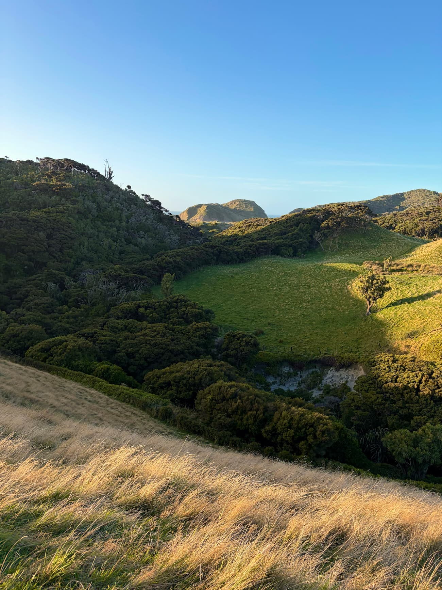
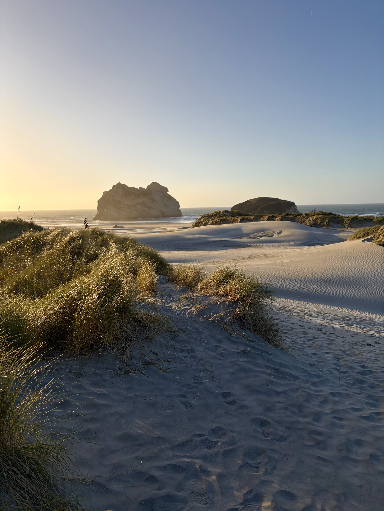
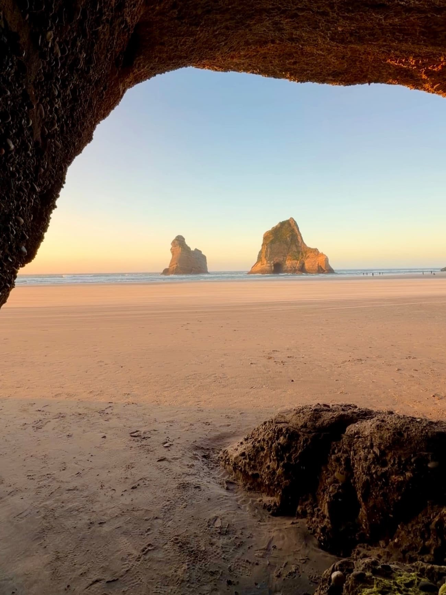

On February 23rd, 2026, I set out on a long day journey from the city of Blenheim in the Marlborough Region of New Zealand's South Island. My route roughly took me to Lake Rotoiti in Nelson Lakes National Park via the Wairau Valley—then north to Motueka, where I trailran the golden beaches of Abel Tasman National Park. After winding through some rather treacherous roads into the Tākaka Valley, I made a final sprint past Cape Farewell, at the northernmost tip of South Island, down to my destination—Wharariki Beach. You've probably never heard of Wharariki, but you most definitely have seen it before. All in all, this took roughly 6 hours of driving one way.
At approximately 6:45 PM, I began the short but beautiful trek towards the beach. The first segment features stunningly green hills with an interesting mix of vegetation and tiny tidal rivers.

Upon descending a set of stairs, I finally set foot on the sand, where I was immediately confronted by dramatic seastacks in the distance. The lighting here was absolutely gorgeous.

After fighting a very unpleasant battle with the sand and wind down the beach, I finally found what I was looking for—the cave where the default Windows 10 Wallpaper was taken! The seastacks and arch look much more grand in person, but the cave itself was much smaller than the perspective of the original wallpaper.

There were roughly a dozen or so other visitors. The beach isn't very well known even as far as New Zealand tourist destinations come—most visitors to the South Island don't make it this far north, as they tend to stick to Queenstown and the alpine areas further south. Another visitor and I attempted to recreate the wallpaper but we couldn't exactly figure out how to match up the rocks in the cave with the arch.
On the walk back, I took a closer approach to the seastacks as the sun slipped over hills in the distance. The blowing sand made for quite the cinematic sunset.
It's an intriguing thought that otherwise mundane or secluded locations featured in default wallpapers across operating systems are possibly the most viewed locations on Earth ever. I spent much of my childhood using school computers booted with Windows 10, and thus saw the same view from this beach quite literally everyday at school (truth be told, I had no idea where the photo was taken at the time). To say it was surreal to see the beach in real life is an understatement.
Wharariki Beach is pretty isolated from the more touristy areas of the South Island, but if you ever have more than a couple weeks in New Zealand, I'd definitely recommend hitting up the northern and west coasts and stopping by Wharariki.